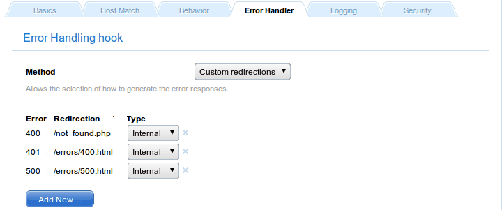
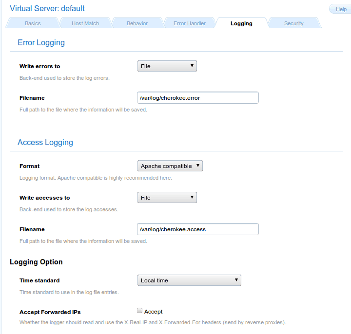

Virtual Server
'Virtual Server' is an abstraction mechanism that allows you to define a custom
number of parameters and rules that have to be applied to one or more domains.
In a Cherokee server there must be at least one virtual server named default,
and there is no maximum number.
It is important to know that this server cannot be deleted.
When the server receives a request it will try to match the domain name specified
in the virtual server that should handle it. In case no virtual server matches
the request, default will be used.
Add a new Virtual Server
You have to enter the server name and a valid Document Root directory in
order to create a new virtual server.

Document Root
This directive sets the directory from which Cherokee will serve files.
The set of rules is checked from the highest to the lowest possible priority.
Once a rule is matched, the server appends the path from the requested URL to
the document root to make the path to the document. If it is a directory, this
information is used. If other rules apply to a parent directory, those are applied
as well without overwriting the original behavior:
http://www.example.com/index.html refers to /var/www/index.html
This might seem complicated but it's actually simple to understand. For example suppose
you had a directory called /secret that was protected with authentication, and there
was also a rule with higher priority for /secret/cgi that only specified to use
the CGI handler. Under these circumstances, if a request was received for
/secret/cgi/something then the CGI handler would be taken and it would inherit the
authentication specified for /secret.
Name
Name is an alias. The domain names handled by the virtual server should be
specified later in the virtual server details page.
Now, we can configure our new virtual server.
Basics
Directory Indexes
The DirectoryIndex directive sets the list of resources to look for when
the client requests an index of the directory by specifying a / at the end
of the directory name. Several URLs may be given, in which case the server
will return the first one that it finds. If none of the resources exist, the
server will reply according to the handler behavior.
Note that the documents do not need to be relative to the directory:
index.html,index.txt,/cgi-bin/index.pl
would cause the CGI script /cgi-bin/index.pl to be executed if neither
index.html nor index.txt existed in a directory.
There is a special case in which the directory index entry starts with
a slash. For example, /cgi-bin/index.pl. In that case, it will use it as
the object accessible under that public address of the same virtual server,
so it will take care about the possible configuration of
the /cgi-bin/ directory and/or the pl extension.
Domain names
This section allows to define the list of domains that the virtual
server implements.
It can accepted either FQDN or wild cards entries. For instance:
example.com
*.example.org
Behavior
This sections allows to define a set of rules to define how the server
should handle the different requests. These rules can be defined based
on the directory that the request targets, the extension of the file
that it is requesting, or a regular expression that may match with the
request:
- Directory: The entry Directory encloses a group of directives which will
apply only to the named directory and sub-directories of that directory.
- Extensions: The entry Extensions doesn't care about directories, it will
just look for the extension of the object requested.
- Regular Expressions: The Request entry provides a powerful way to apply
custom options to requests. It is a complement for the Directory and Extension
entries. Basically, there are two differences between them:
- It uses regular expressions to define the requests in which the configuration
will be applied.
- These entries are able to use the connection parameters (both pathinfo
and query string). In this way, it is possible to set rules based on
parameter values.
It is very important to know that this rules are prioritized, the
bigger its priority is, the sooner that are checked against. You could
think of a network routing table, it is quite similar.
Each of these behavior rules must specify which is the handler that
the server should use to reply the requests that matches the rule.
Handler are the modules that generate the information with which the
server responses a client request. By default Cherokee provide a
number of them:
file - File Sending
The file handler serves files straight from the filesystem.
dirlist - Only listing
Displays a directory content list when a directory is requested,
but it does not allow to download any content.
common - List & Send
Combines both file and dirlist handlers functionality to behave similarly
to common web servers, it will display directory listings when a directory is
requested.
redir - Redirections
Perform simple and/or complex redirections using regexes.
cgi - CGI Execution
Executes CGI programs.
scgi - SCGI Server Support
Communicates with SCGI servers.
fcgi - FastCGI Server Support
Communicates with FastCGI servers.
Error Handler
We can easily redirect errors to a custom path or website.

Logging
The loggers are a type of Cherokee modules to write the server log
information using different destinations and/or formats:
- Destination: File, syslog, program execution and standard error output.
- Format: Combined (Apache compatible), NCSA or W3C
If a virtual server doesn't have a logger set up it will not log anything.

By default Cherokee ships three loggers implementing three different
logging formats:
combined - Combined Log Format
Logging using the Apache log format. It is the de facto standard nowadays.
ncsa - NCSA Log Format
Logging using the NCSA log format.
w3c - W3C Log Format
Logging using the W3C log format.
Security
The virtual server must be configured with the path to the certificate
before using secure connections (https). There is a document which
might help to generate SSL keys
FQDN: Full Qualified Domain Names